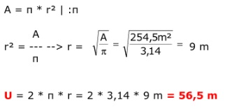

Aufgabe 40 Eine Bauer will seine kreisrunde Wiese umzäunen. Sie hat eine Fläche von 254,5 m2. Wie lang muss der Zaun sein? A = π * r2 |:π A r2 = --- --> π r =  = 9 m U = 2 * π * r = 2 * 3,14 * 9 m = 56,5 m